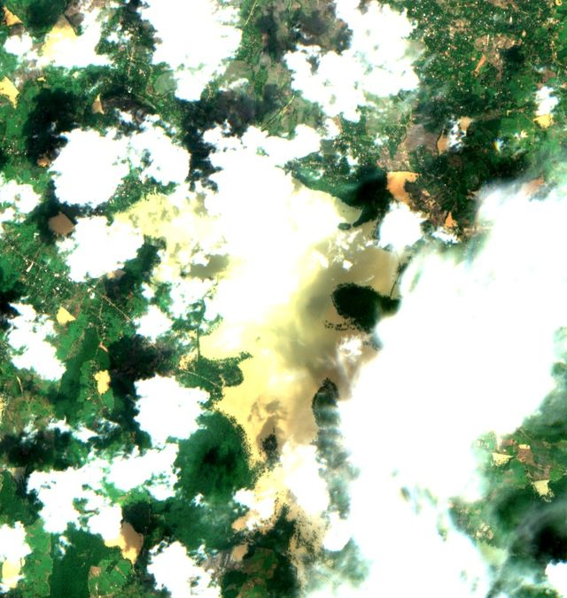
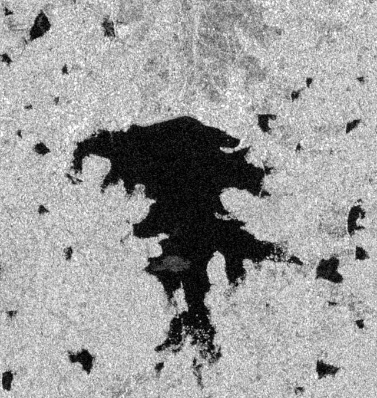
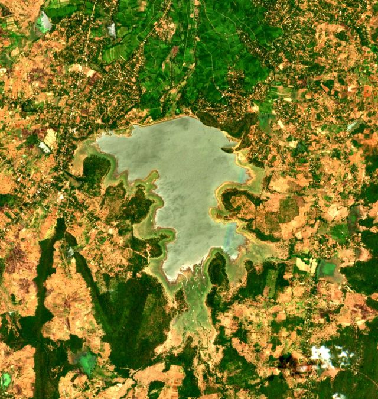
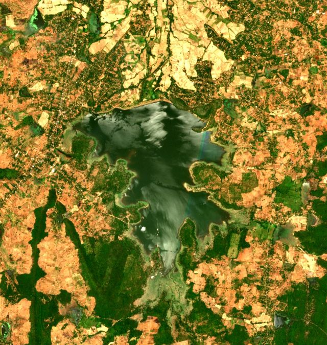
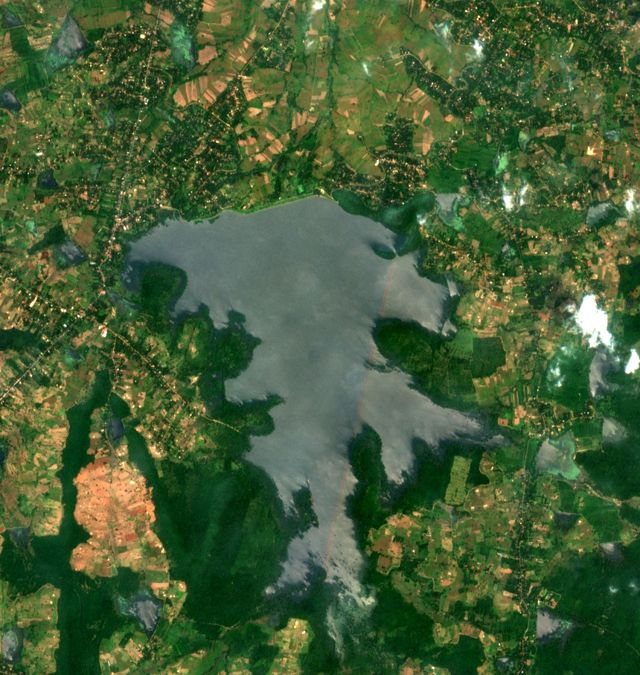
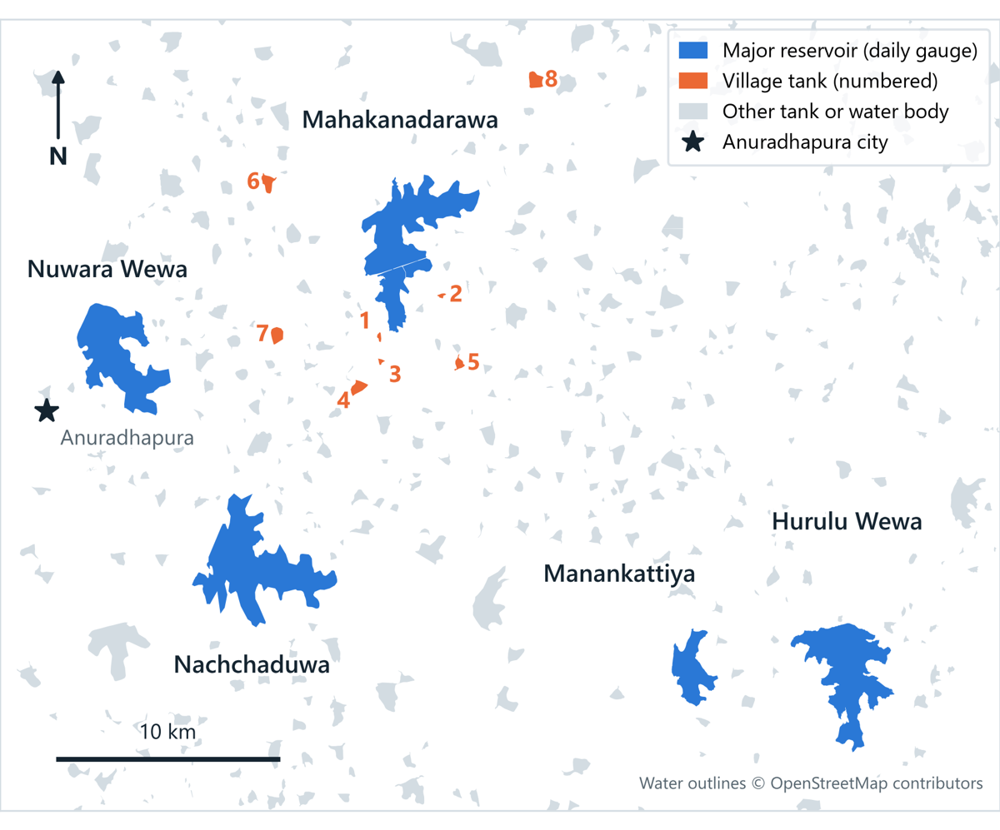

IS4990 Comprehensive Group Project · University of Moratuwa
SWOT Tank Water Tracker for Sri Lanka
An AI system that estimates how much water each tank holds, using free satellite data.
Tanks around Mahakanadarawa, Sentinel-2, 28 Feb 2026. Contains modified Copernicus Sentinel data 2026.
Why
Dry-zone farming depends on tank water
small tanks of 80 ha or less in Sri Lanka, the base of dry-zone farming
National Tanks Survey, in Lopane et al., 2025
Maha and Yala. Before each one, farmers plan the crop by the water in their tank.
Cultivation meetings at village tanks, Oka et al., 2015
small tanks damaged by Cyclone Ditwah in November 2025
Department of Agrarian Development, December 2025
But today, nobody can say how much water most tanks hold.
The problem we solve
Satellites see the tanks, but not the water in them
The problem
For most Sri Lankan tanks, nobody can say how much water they hold right now, and there is no low-cost way to measure it often.
No gauges on village tanks
Only 118 reservoirs publish daily water levels. Village tanks publish none.
Irrigation Department, Reservoir Status, 25 Oct 2026
Maps show area, not volume
IFAD maps over 10,650 water bodies, but by area only. A shallow tank and a deep tank of the same size hold very different amounts.
IFAD, 2026
Clouds and plants hide the water
Only 17–22% of Sentinel-2 dates were clear over our test tanks, and water plants cover 3 of our 8 village tanks.
Our data check, October 2026
SWOT gives height, not volume
The NASA and CNES satellite, launched in December 2022, measures water height. It does not give volume, and no one has checked it on Sri Lankan tanks yet.
NASA and CNES; our literature search, October 2026


Our answer
From water height to water in the tank
SWOT is the ruler. We turn its readings into the water in each tank, and check the results against official gauges.
SWOT measures the height
Each tank's water height, about twice every 21 days, from NASA's Hydrocron service.
AI maps the water area
Our model maps open water, water under plants and land from Sentinel-1 radar and Sentinel-2 photos, even under cloud.
A curve for each tank
Each SWOT height, paired with the water area of the same day, adds a point to the tank's height–area–volume curve.
Storage every 5–12 days
Every new water map then becomes a volume in m³ and % full, checked against Irrigation Department gauges.
Real data
Hurulu Wewa, seen by SWOT and Sentinel-2
Each picture pairs a Sentinel-2 photo with a SWOT height taken at about the same time. Each pair is one point on Hurulu Wewa's curve.



Areas here come from a simple water index, which works only on clear days. That is why we are building the AI water model.
In Cyclone Ditwah, Hurulu Wewa rose 4.6 m and gained about 44 million m³ in four weeks (25 Nov to 23 Dec 2025), by SWOT's own storage numbers. See all five reservoirs

Study area
5 reservoirs and 8 village tanks near Anuradhapura
-
5 major reservoirsHurulu Wewa, Mahakanadarawa, Manankattiya, Nachchaduwa and Nuwara Wewa, all with daily gauge readings
-
8 village tanks0.4–5 km from Mahakanadarawa: 2 with open water, 3 mixed and 3 mostly covered by water plants
-
Seen by SWOT passes 273 and 092All 13 tanks, about twice every 21 days, with 47–90 usable readings each since July 2023
Team
Who does what: one research question each
Each of us owns one core research question from start to finish.
AI water maps
RQ1- Labelled water masks of Sri Lankan tanks
- Sentinel-1 and Sentinel-2 deep-learning model
- A water-plant class for covered tanks
Output: water maps for all tanks
SWOT and gauges
RQ2- SWOT heights from Hydrocron, poor readings removed
- Gauge data: daily records, history and field photos
- Tests whether "suspect" readings can be trusted
Output: SWOT accuracy report
Storage and dashboard
RQ3RQ4 stretch- Height–area–volume curve for each tank
- Storage every 5–12 days, checked against official figures
- Dashboard, and the forecast if time allows
Output: storage series and dashboard
Explore